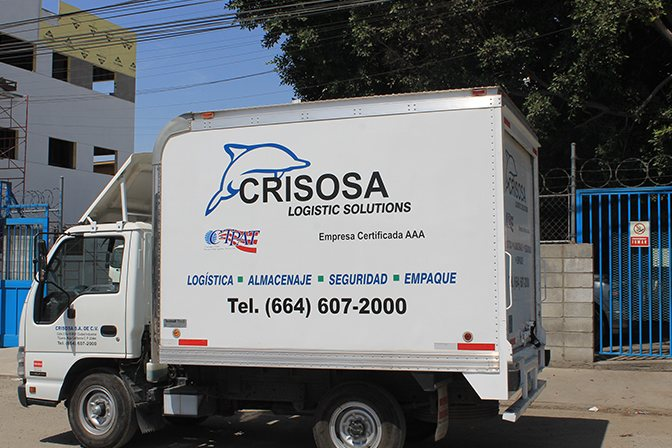
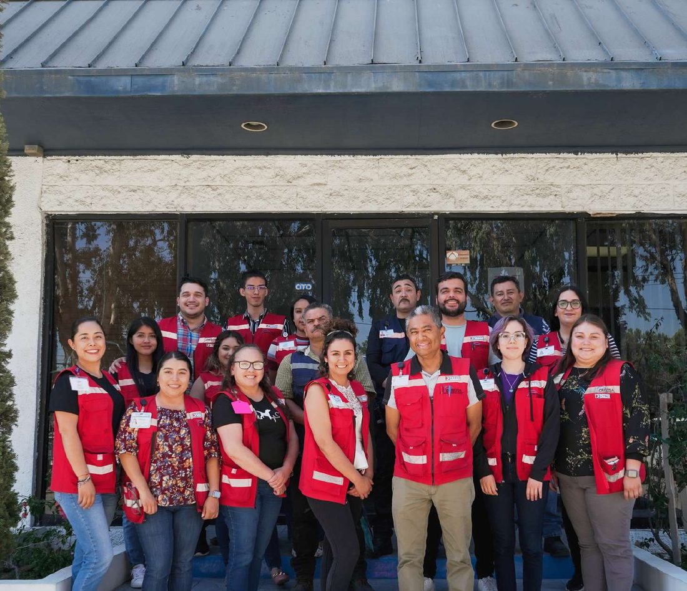

Fotografía · abt-hero.jpg · 16:9 Nosotros — la nave al amanecer
Desde 1994
Treinta años aprendiendo el mismo cruce
Somos una empresa de operación: la misma gente que cotiza es la que responde cuando algo se atora.
El crecimiento vino de la operación
Cada nave y cada certificación llegaron cuando la carga de los clientes ya las estaba exigiendo. Es una forma lenta de crecer y la razón de que la infraestructura corresponda a lo que de verdad se opera.

Fotografía · abt-truck.jpg · 3:2 Nosotros — la unidad de reparto

Fotografía · abt-team.jpg · 3:2 Nosotros — el equipo
Cómo trabajamos
Los compromisos que sí podemos sostener
- Un responsable con nombre por cuenta, no un buzón compartido
- Las malas noticias se avisan cuando se detectan, no cuando ya no llegó
- Cotizamos sobre datos concretos; si algo no lo sabemos, lo decimos
- Cumplimiento antes que velocidad: un cruce rápido con papeles dudosos es un pasivo
Quién responde
Cada área tiene cara y nombre
No trabajamos con un conmutador. Sabes desde el primer día quién lleva tu cuenta y quién decide cuando algo hay que resolverlo hoy.

Fotografía · lead-1.jpg · 4:5 Retrato — Dirección General

Fotografía · lead-2.jpg · 4:5 Retrato — Dirección de Operaciones

Fotografía · lead-3.jpg · 4:5 Retrato — Comercio Exterior

Fotografía · lead-4.jpg · 4:5 Retrato — Almacén y Distribución

Fotografía · lead-5.jpg · 4:5 Retrato — Atención a Clientes